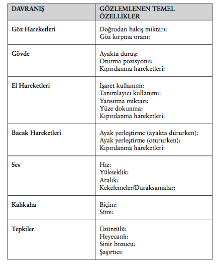
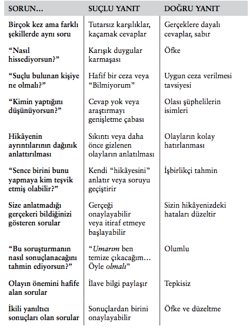

EK I-TEMEL YÖNTEMİ KULLANMAK
Hakikate Ulaşmak için Konuşmayı Yapılandırma Rehberi
Artık aldatıcı davranışın sözlü ve sözsüz özelliklerini, yalan söylemenin gerisindeki nedenleri ve yalan yakalamak için bir sürü kanıtlanmış tekniği öğrendiniz. Yaşamınızda ve işyeriniz-de olası hile olaylarıyla karşılaştığınızda, TEMEL yöntem size güven ve işbirliği sağlamak ve hakikati ortaya çıkarmak için ihtiyacınız olan araçları verecek.
Bundan sonraki beş sayfa, siz TEMEL görüşme yöntemini uygulamaya başlarken sizi eğitmek ve yol göstermek için bir yapı verir. Her adımı teker teker parçalara ayırırken, ayrıntılı temel davranış gözlemleri yapmak, sınırsız bilgi almak için sahneyi kurmak, ipucu kümelerini sentezlemek, içgüdülerinizi öznenizin hikâyesiyle yan yana koyup karşılaştırmak ve dürüst veya suçlu yanıtların tutarlılığını ölçmek için gerekli donanıma sahip olacaksınız.
Adımların birçoğu birbiriyle örtüşürken veya eşzamanlı uygulanırken, hakikati keşfetme yönünde her biri ayrı bir dönüm noktasını temsil ederler.
TEMEL / Temel davranış
Hedef: davranıştaki değişimleri ölçmekte kullanılacak güvenilir bir referans noktası elde etmek.
Normal koşullar altında etkileşime girin ama gördüğünüz ve duyduğunuz şeye daha fazla dikkat edin.

TEMEL / Açık uçlu sorular sorun
Hedef: basit “evet” veya “hayır” sorularından kaçınarak, genişletilmiş sözlü cevaplar ve yüz ve davranışlardaki kaymalar yoluyla sınırsız bilgi elde etmek.
Bildiğiniz ve bilmek istediğiniz şeyi saptayın
ihtiyacınız olan kanıtı belirleyin
Kişi hakkında önceden bildiklerinizi belirleyin
Hiçbir varsayımda bulunmayın; her türlü önyargıyı askıya alın.
“Kim, Ne, Ne zaman, Nerede” soruları ve olası cevapları hazırlayın.
“Niçin...” yerine, “Bunu yapmana neden olan...” veya “Seni engelleyen...” diye sorun.
Yakınlık kurun
Göz temasını koruyun.
Diğer kişinin beden dilini ve konuşma temposunu yansıtın.
Şakalarına gülün.
Tehditkâr olmayan, içten bir pozisyonda oturun.
Öznenin fazla savunmacı olmasına izin vermeyin.
Tartışmadan kaçının.
Aktif olarak dinleyin ve ortak zemin bulun.
Gözlemlenebilir bir karşılık alın
Ortamın rahat ve dikkat dağıtan şeylerden uzak olmasını sağlayın.
Görüşmenin bittiğini açıkladıktan sonra herhangi bir davranış değişikliğine dikkat edin.
Birden çok hikâye ileri sürün
Öznenin suçlama kalıplarını ve kişisel ve profesyonel ihtiyaçlarını yazın.
Empati kurarak öznenin aldatıcı davranmasına neden olabilecek bir dizi muhtemel neden öne sürün
TEMEL / Kümeleri inceleyin
Hedef: Yüzdeki, davranışsal ve sözel ipuçlarını birleştirerek öznenin ruh halini belirleyin.
Aldatıcı davranışın bu potansiyel işaretlerinden oluşan kümeleri gözleyin:
SÖZSÜZ İPUÇLARI
Düzeltme hareketleri
Gözleri ovuşturmak (erkekler)
Gözlerin altına dokunmak (kadınlar)
Elleri ovuşturmak
içe doğru kıvrılmış ayaklar
Büzülmüş dudaklar veya dudakları ısırmak
Kendini bırakmış bir şekilde oturma veya kendini koruma duruşu
Masanın üzerinde veya yerde nesneleri hareket ettirmek
SÖZEL İPUÇLARI
Görüşme sonrası rahatlama ifadesi
Aşırı terleme, nefes alma, parmakları tıklatma
Göz kırpma oranında değişme
Omuz silkmeler, sıkılı yumruklar, kaş göz etmek, konuşmayla uyumsuz şekilde avuçlar yukarı dönük
Yapmacık gülümseme
Kapalı gözler veya bir hikâyeyi anlatırken hafıza yerine hayal gücünü kullanmayı gösteren gözler
Niteleyici cümleler:
“Bildiğim kadarıyla...”
“Size doğruyu söylemem gerekirse...”
Güçlendirme cümleleri:
“Ben kesinlikle yapmadım.”
Sorunuzu kelimesi kelimesine tekrarlama
Doğal olmayan yanıt zamanı
Yersiz ayrıntı
Kısa, kırpılmış cevaplar
Dine başvurmak:
“incil üzerine yemin ederim.”
Alakasız ayrıntılara itirazlar:
“Hayır - tavuk yemiştim,
biftek değil.”
Sızlanma: “Bu daha ne kadar sürecek?”
Yardımcı olmayan veya ciddiye almayan tutum
Olaylardan çok sizi ikna etmeye önem vermek
Uzun bir giriş bölümü olan, esas olayın geçiştirildiği sonuç olmayan bir hikâye
Hikâyede uygun duygunun yokluğu
TEMEL / Boşlukları sezin
Hedef: içgüdülerinizi dikkate alarak, boşlukları belirleyin ve doldurun.
Bütün farkları not edin:
CÜMLE BOŞLUKLARI
Ne olduğunu söylüyor? Olaylar ne olduğunu gösteriyor?
MANTIK BOŞLUKLARI
Olayların akışının nasıl geliştiğini söylüyor? Mantıklı veya normal olay akışı nedir?
DAVRANIŞ BOŞLUKLARI
Şu anda nasıl davranıyor? Temel davranışı nasıldı?
DUYGU BOŞLUKLARI
Ne söylüyor?
Çelişkili bir yüz ifadesi var mı? Bedeni farklı bir tavır sergiliyor mu?
TEMEL / Teyit edin
Hedef: Önsezilerinizi test edin ve sonuca doğru ilerleyin.
